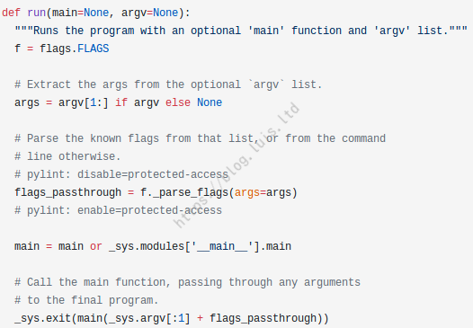

Python中的下划线与函数的花式调用
Python中的下划线与函数的花式调用
前言：今天在看一个 TF 程序的时候，发现很多例程都喜欢把 main 函数定义为：main(_)，而不是 main(argv=None)，当然对于一个 Python 程序而言，一切皆为对象，用下划线当做参数变量并没什么好奇怪的（毕竟连 ... 都是一个 Ellipsis 对象，甚至可以修改其默认值），但如此广泛应用，应当是有一定原因的，找了找论坛和 SOF，简略看了一下 TF 中 run() 函数的源码（主要是复杂的看不懂），算是初步了解了 Python 中下划线的应用，而且还无意间看到了一篇关于 Python 函数“花式”调用的文章，受益匪浅。
1. 来源
最开始有这个疑问是因为今天 突发奇想心血来潮自我膨胀差点上天的 看了看 TinyMind 里面的云平台，进去还送了 2 点平台点数，本着不用白不用的心态，想想亚马逊和阿里比较昂贵的价格，准备试试看这里效果怎么样，然后点开官方文档就看到了一个巨经典的例程：mnist 手写识别，虽然写是写过，不过自己是基于 C++ 写的，Python 的代码还是可以好好看看，这一看就发现了简介中的现象，作为一个码（fei）农（zhai），遇到问题当然是问。。哦对了，千万不要再汤很凉上搜索“_”这个关键词。
2. Python基础语法中的下划线
如果写过 Python，其他下划线不多说，至少 __name__ 和 __init__ 是见过的，以前只想过这是语法规定以及一点都不优雅，这回是好好整理了一把，先列出 Python 中可能存在的 5 种下划线的情况：
- 单前下划线：
_sample - 单后下划线：
sample_ - 双前下划线：
__sample - 前后双下划线：
__sample__ - 单独下划线：
_
2.1 单前下划线：_sample
单前下划线的写法非常“约定俗成”——纯粹只是一种习惯和写法的延续，用于表示该变量是个 函数/类 的内部变量，写不写完全看个人习惯。但在一种特殊情况下，单前下划线是有特殊作用的，下面用代码说明。
首先定义一个类 ClassA，重写构造方法并定义两个变量：
1 | class ClassA: |
运行输出也很正常，这说明单前下划线并不影响一个变量被访问，这时我们考虑一种情况，假设在一个 module：im_module.py 中有两个函数：
1 | # im_module.py |
接着在别的地方把这个 module 导入并调用其函数：
1 | from im_module import * |
这是一种虽然不好但很常见的导入方式，但结果呢？是的，在使用通配符 导入的时候，解释器会过滤掉单前下划线的成员。 *但！ 前文也说了，通配符导入并不是良好的编码习惯，这种导入方式非常容易导入 无关/冲突/未知/… 的部分，因此通常还是应该手动选择需要导入的部分，如果需要导入全体，则应该使用如下方式：
1 | import im_module |
这次的输出结果一切正常。
也就是说，除非使用通配符 * 的方式进行导入，会导致单前下划线修饰的成员被忽略，否则与不带下划线的成员没有区别。
除了这种特殊情况之外，就像 Java 中喜欢用 m 前缀来表示成员变量一样，这仅仅只是一种提醒功能，具体好不好、对不对、有没有用呢，那就仁者见仁了，一般是根据团队项目最初定的标准来决定，个人项目就纯粹看习惯了。顺便提一句，在 Google 官方的 Java Style Guide 中并不推荐这种写法，当然这也跟如今 IDE 的智能有关，如果使用的编辑器没有代码高亮或者提示功能，还是建议加上吧，这篇文档的中译版可参考附录【2】。
2.2 单后下划线：sample_
单后下划线相对而言可能使用场景还比较多，它的主要功能是“规避”关键字冲突。Python 中有许多关键字，例如 class，sum，len，type 等，但在许多时候，我们自己定义的变量、方法等，很难找到更适合的表示单词，或是改变写法又太麻烦/不直观，例如学校、师生类中的“班级属性 class”，商品的“种类 type”，这时候如果我们不想费时间写出像 class_num 或者 type_name 这样的标识符，或许可以直接用 class_ 和 type_ 代替，这样既避免了和关键字的冲突，又能很直观地表示其含义。
2.3 双前下划线：__sample
这个就有点意思了，用双前下划线标识的属性，解释器会重写名称，以避免子类中的命名冲突，其效果对属性和函数是一样的，以下代码仅用属性举例：
1 | class ClassA: |
在输出的结尾，_pre 和 normal 都在，唯独不见了 __double_pre？其实并不是没有，而是解释器自动改变了其内部形式，就在输出的第一个：_ClassA__double_pre，解释器自动为这个属性增加了一个当前所属类的类名标识 _ClassA。
这也意味着，即使在 ClassA 所在的当前 module 内，如果需要调用这个属性，用 ClassA().__double_pre 也会报错 AttributeError: "'ClassA' object has no attribute '__double_pre'" ，而应该使用 ClassA()._ClassA__double_pre 的方式调用。
为什么要这样，又有什么用呢，用下面的代码就可以说明：
1 | class ClassB(ClassA): |
不论是继承自 ClassA 也好，还是直接覆写也好，其最终的输出中都既有 _ClassA__double_pre，也有 _ClassB__double_pre，同样，也是因为解释器自动给 __double_pre 增加了一个当前所属类的类名标识 _ClassB，因此父类 ClassA 中的 __double_pre 并不会被重写：
1 | print(b.normal) |
可以看到，被前双下划线标识的属性是不会被重写的
此外，还有一个特别有意思的应用：
1 | _ClassC__double_pre = "DoublePreinClassC" |
乍一看在 ClassC 的 call() 方法中返回的 __double_pre 根本没有定义啊，应该报 NameError 错误才对，实际上，因为在上面手动定义的 _ClassC__double_pre 具有 _ClassC 前缀，因此程序调用 call 方法的时候，解释器会自动给 __double_pre 加上 _ClassC 前缀，而又恰好存在这么个变量，因此可以正常输出。
这也说明，如果某个类内有属性/方法是以双前下划线修饰，则解释器会自动给双前下划线的成员添加其所属类的前缀，这种转换适用于整个类内所有以双前下划线开头的任何名称，而不论它是一个变量还是方法还是其他。
2.4 前后双下划线：__sample__
这个就好解释多了，也常见的多了，Python 保留了许多用前后双下划线修饰的属性/方法，像 __name__ 或是 __init__()，当然只要我们愿意，并且命名不冲突，我们也可以自行定义前后双下划线修饰的成员，这本身是没有错的：
1 | __test__ = "Test" |
但不太推荐这么做，主要原因是 Python 官方保留了这么命名的做法，因此可能现在没有发生冲突的一些命名，在未来 Python 经过更新后由于官方加入了对应的保留成员而导致冲突。
因此，干脆就不要使用自定的前后双下划线成员，并且记住这样修饰的都是 Python 保留命名就好了。
不过我觉得一般也没什么人愿意如此麻烦的加上四个下划线吧，说不定 Python 当年就是考虑到这个才这么设计呢（逃）。
2.5 单下划线：_
说实话我第一次见到这个写法的时候还以为是源码写错了，不过其实通俗的讲，既然 Python 一切皆为对象，当然也就可以把 _ 当做很普通的成员使用，事实也确实如此：
1 | _ = "Underline" |
玩上瘾了，我相信如果你在团队项目里面大量使用 _ 作为变量/方法名，明年就该有坟头草了。
正经的解释：如果某个变量、方法、参数没有实际用途，可以使用 _ 来代替，以表明这是个可以忽略的部分。说起来好像没什么用，其实在真正的源码中，这个用法可以大幅提高阅读感，例如：
1 | user = ('ZhangSan', '20岁', 'Male', '80分', '野鸡大学', '计算机专业', '物联网工程') |
这么写出来的代码，阅读时可以非常直观地看出来，这些消息里面我关注的只有 name 和 college，其中 _ 被多次赋值，因此输出的值是最后一次赋值“物联网工程”。
另外，_ 还是大多数 Python REPL 中的一个特殊变量，它不仅可以当做普通的变量、方法正常调用，还会自动保存你最后一次计算的结果，例如：
1 | print(_) |
但请注意：如果你已经手动给 _ 赋值，则它在当前上下文范围内不会再自动保存你的计算结果
1 | a = 1 + 2 |
也就是说，_ 在未被手动赋值前，当前上下文内每次计算的记过都会赋值给 _，直到你手动给 _ 赋值使其称为一个常规成员。
2.6 __name__的应用
__name__ 可以说是 Python 中的一大常客了，最常见的形式就是：
1 | if __name__ == '__main__': |
通常这个语句会作为一个程序的入口，但为什么会有这么奇怪的一个条件语句呢？用代码一下就能解释明白。首先创建一个 module：rate.py，内容如下：
1 | LEARNING_RATE = 1.005 |
可以看到此时 __name__ == "__main__"，如果再新建一个 module：test.py，内容如下：
1 | import rate |
可以看到，rate.py 中的 __name__ 变成了 “rate”，因此条件语句没有执行。
因此，__name__ 可以用来判断该 module 是直接执行的还是被其他 module 引入后执行的。
2.7 TensorFlow中的run()方法
先来看看 TF 中 run() 方法的源码：

从图中可以看出来，当传的参数 main 为空时，跳过执行，如果不为空，则调用 main 函数，因此想要调用 tf.app.run() 方法，则需要在模型程序中定义 main(argv) 函数，并且接收参数 args，如果模型不需要使用这些参数，就可以用 main(_) 来表示，也就回答了最开始的问题。
3. Python中方法的花式调用
首先，几乎在所有的程序中，调用函数/方法的步骤无非就两个：① 定义，② 调用。在 Python 中也是如此，使用关键字 def 来声明一个方法：
1 | def func(): |
似乎我们所熟知的函数/方法调用也就只有这一种，但 Python 还有一种很好玩的调用方式：根据名称调用：
1 | def func_a(): |
eval() 函数可以直接转换成函数调用，而 locals() 和 globals() 可以通过字典的方式访问局部、全局变量。之所以 Python 支持这种形式的调用，是因为 Python 使用 名字空间 来记录变量的变化。每个函数都有自已的名字空间，称为局部名字空间，其记录了函数的变量，包括函数的参数和局部定义的变量；每个 module 也都有自已的名字空间，称为全局名字空间，其记录了模块的变量，包括函数、类、其它导入的模块、模块级的变量和常量；还有一个内置名字空间，任何 module 均可访问，其存放了内置的函数和异常。名字空间是一个字典，键 key 就是变量名，值 value 就是变量的值，名字空间就像 Python 的普通字典一样可以进行访问。当某行代码要使用变量 x 的值时，Python 会到所有可用的名字空间去查找变量，按照如下顺序：
- 局部名字空间 - 特指当前函数或类的方法。如果函数定义了一个局部变量 x，Python 将使用这个变量，然后停止搜索。
- 全局名字空间 - 特指当前的模块。如果模块定义了一个名为 x 的变量，函数或类，Python 将使用这个变量然后停止搜索。
- 内置名字空间 - 对每个模块都是全局的。作为最后的尝试，Python 将假设 x 是内置函数或变量。
如果Python在这些名字空间找不到 x，就会放弃查找并引发一个 NameError 的异常，同时传递 “There is no variable named ‘x’” 错误信息。
在 Java 或 C/C++ 等编译语言中，编译器会将代码编译为二进制文件执行，在程序内部，是没有“变量名”这个概念的，所以我们的代码只能通过变量名取值，而不能通过具体的变量获得变量名（当然可以用 Map 的方式手动保存，但这本身脱离了原意），但在 Java 中，有一种很类似的样例就是 ObjectAnimator 中的属性名 Attr，调用该方法会通过设置的属性名去获取对应控件下的 setAttr() 方法，和此处的命名空间有着异曲同工之妙。